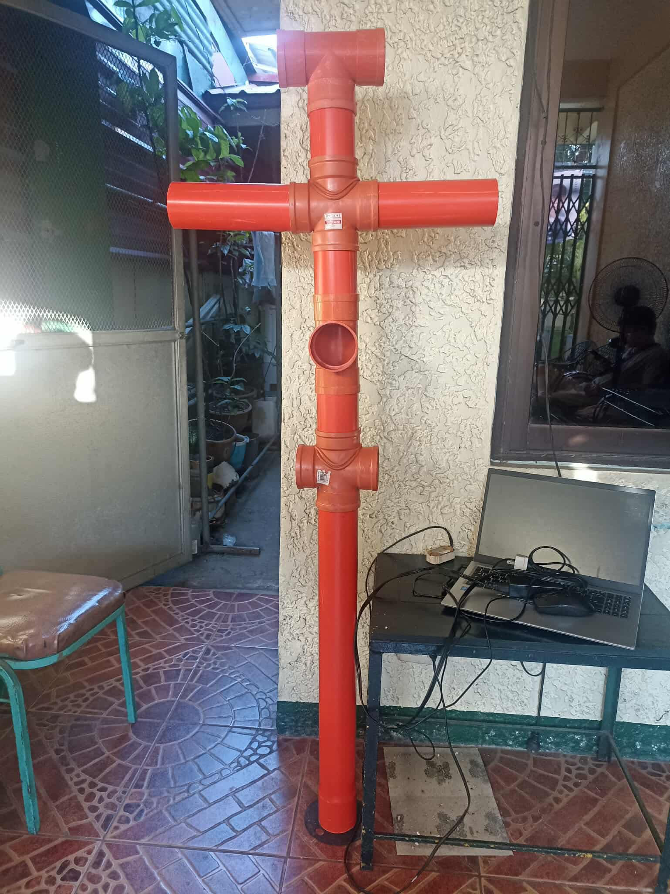
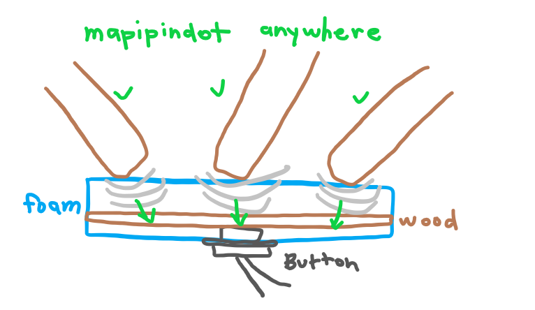
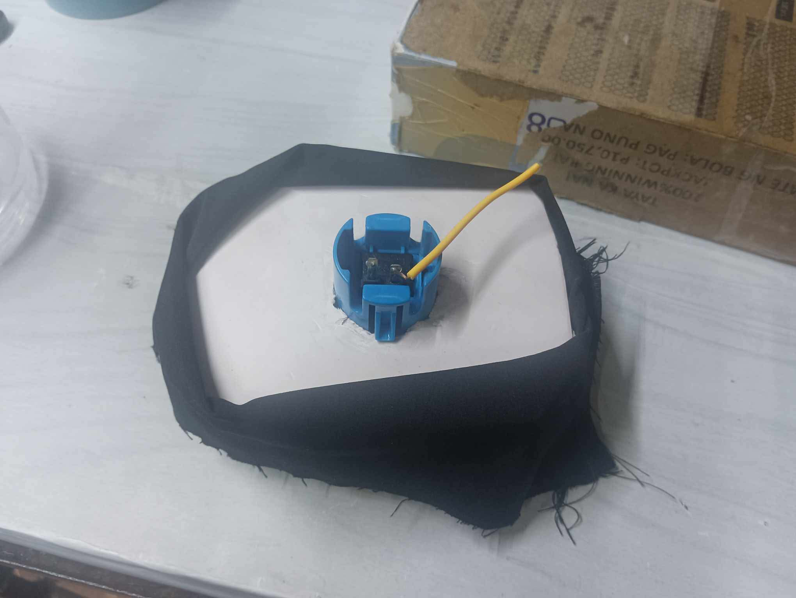
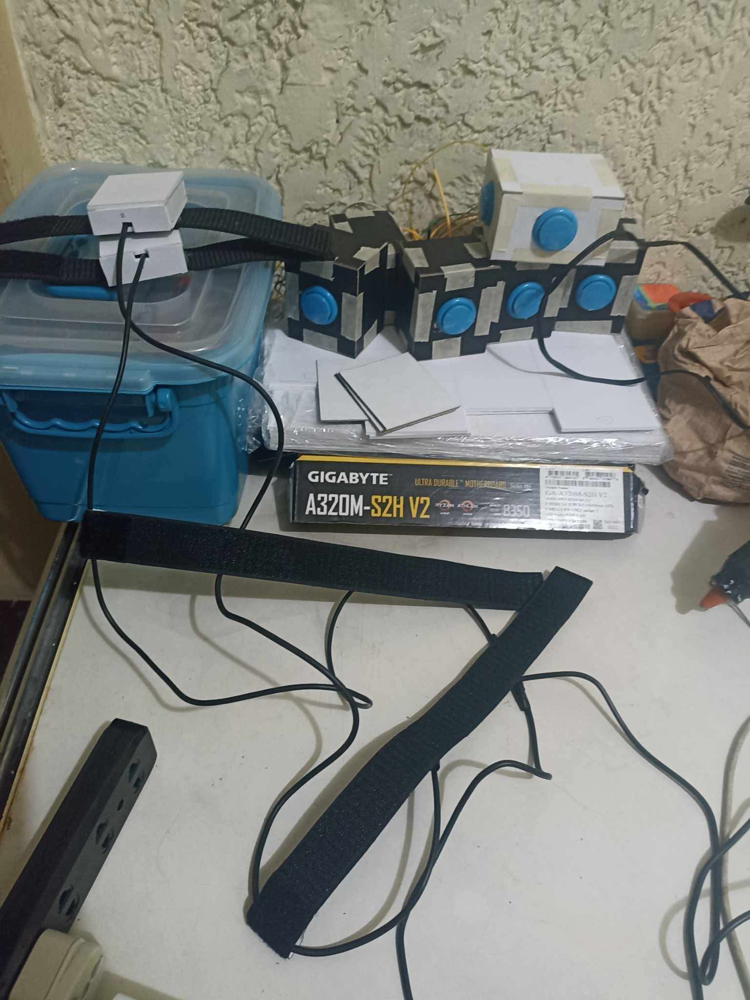
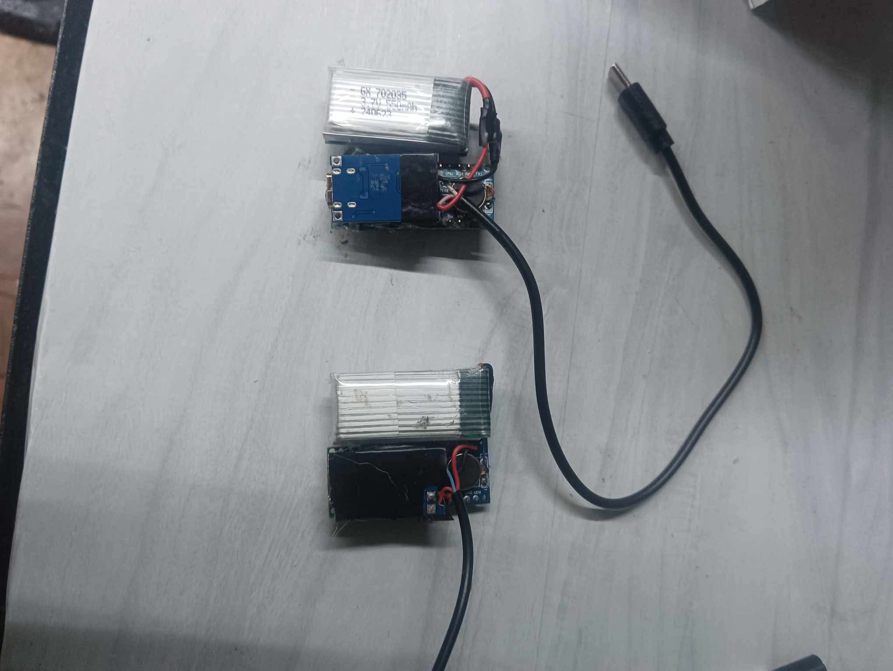
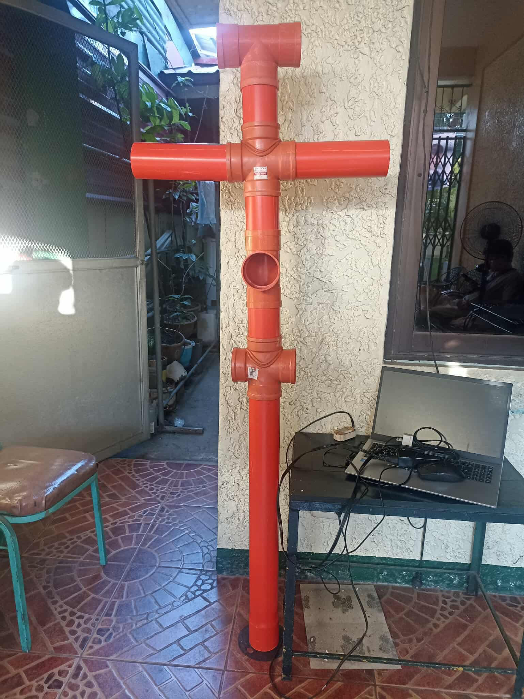
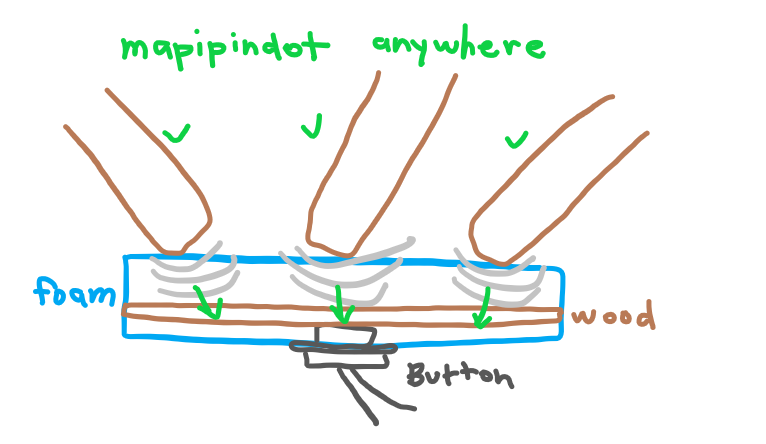
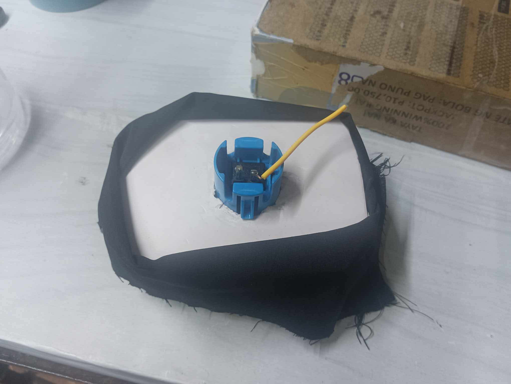
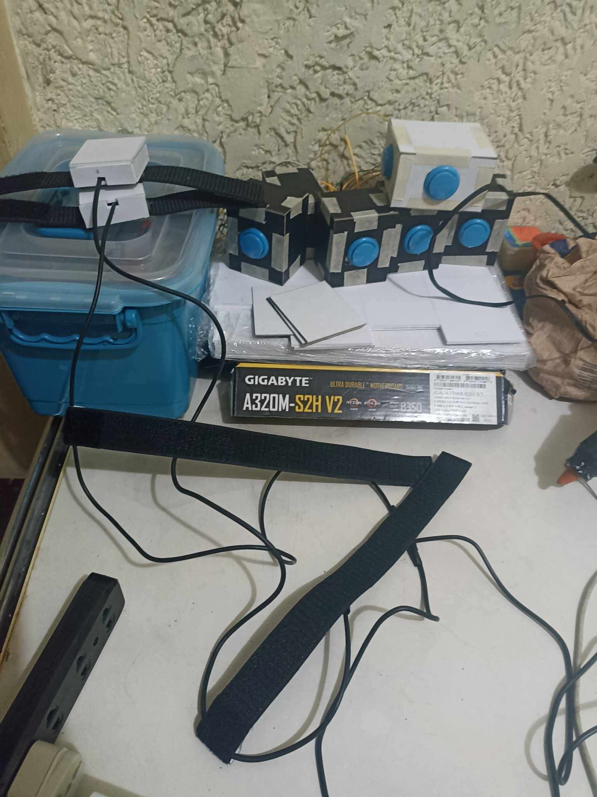
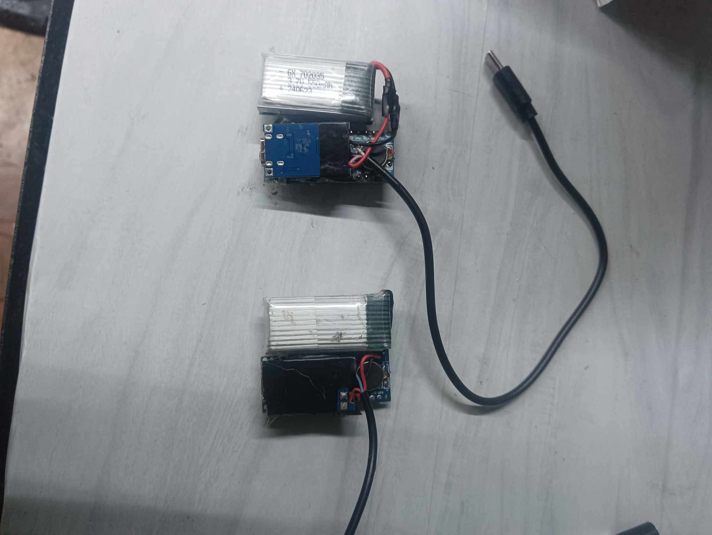

The Problem We Tackled
When we started this project, we saw that Arnis practitioners struggle when training alone because there’s no instant feedback to tell them if their strikes are accurate, strong, or done with the right form. Static dummies and partner drills only help so much—they don’t show mistakes, and they don’t track performance. So as a team, we challenged ourselves to build something smarter: a training dummy with sensors that can read impact, movement, and technique in real time. Our goal was simple—give athletes clear, immediate feedback so they can correct themselves while they practice.
 








